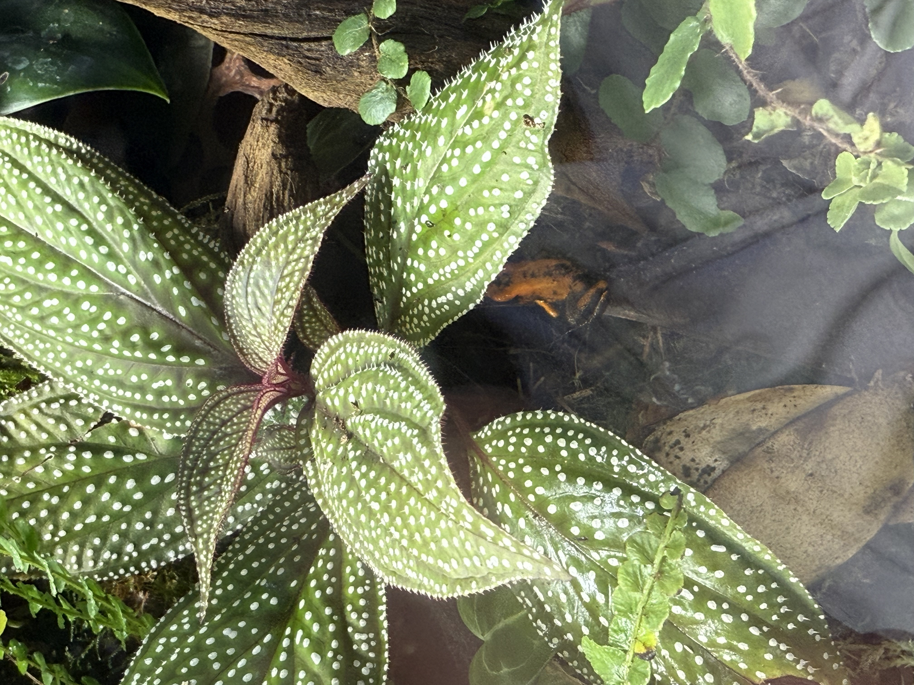

Little Jungle Gems
Poison Dart Frogs! Dart frogs are some of the most beautiful and amazing little creatures on this planet. Coming from mainly Central and South America these little guys are mostly known for thier toxic skin, primarily being used for darts for the indeginious population in the area. These frogs love the humid Rainforest and thrive in damp areas of the forest floors. In the wild they are extremely poisonious becuase of the small insects that they eat! So luckily for us, since they eat fruit flies, they are not poisonious in the pet trade!
There are many different types of dart frogs. The most popular being Dendrobates tinctorius, Dendrobates auratus, Dendrobates leucomelas. But other amazing "Thumbnail" dart frogs being Ranitomeya benedicta, Ranitomeya imitator, Ranitomeya reticulata! Here is a YouTube Video that explains which one is best for you!
Shawinigan Way SW
Calgary, AB T2Y 2A1, Canada
376-477-8532
I do not have and affiliation with this company just my favorite one.